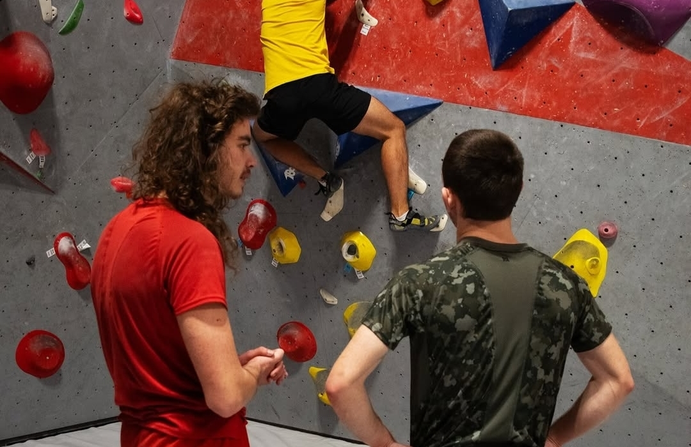
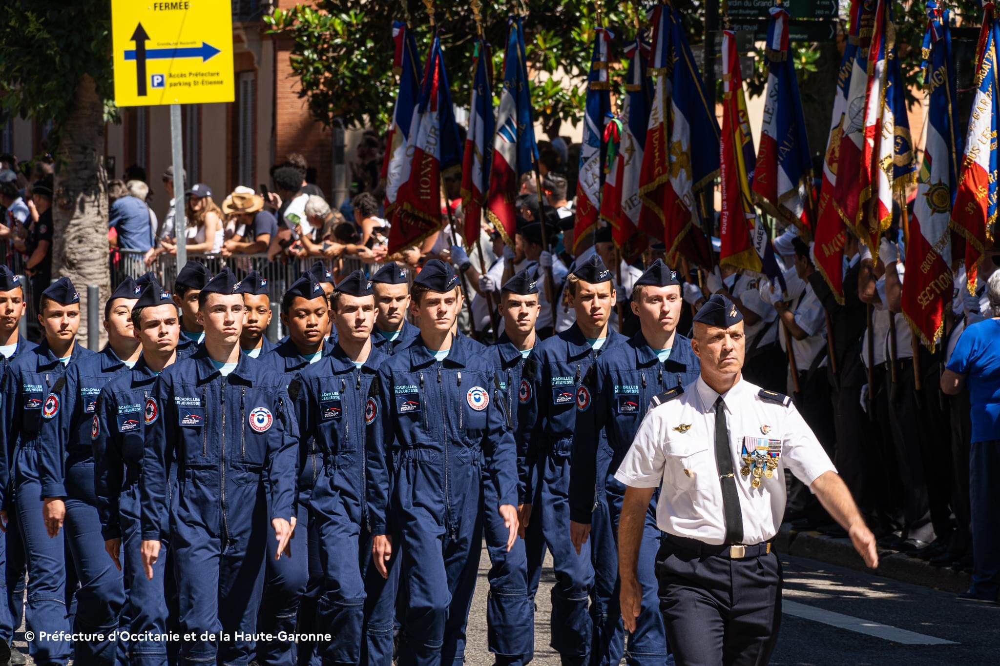
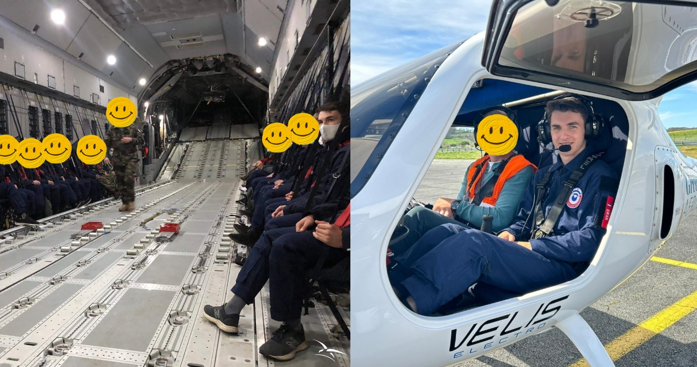

ENSEEIHT e-Portfolio
Parcours Ingénieur ▾
Cours à l'ENSEEIHT
Projets et Productions
Mobilité Internationale
Développement de Carrière ▾
EN
Mes activités extra-académiques

Escalade üßó‚Äç‚ôÇÔ∏è
Apiculture üçØüêù


Escadrille Air Jeunesse ✈️